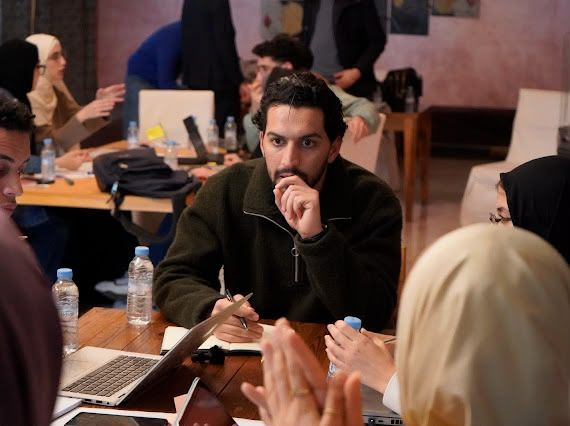
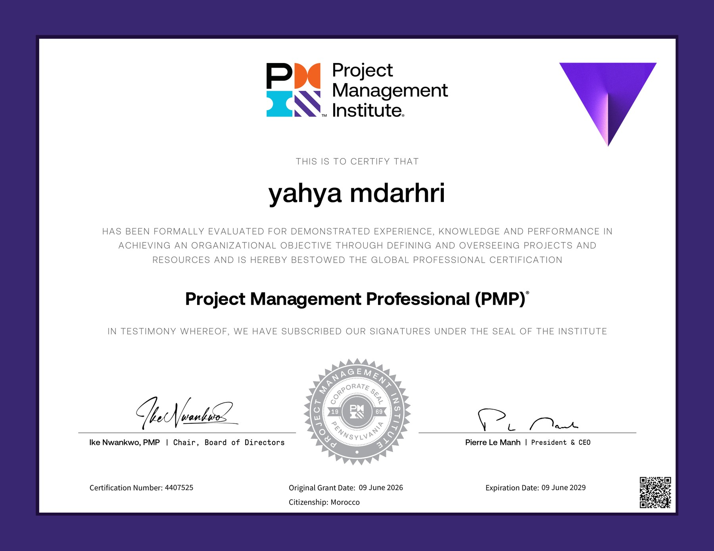

From BI reporting, through machine learning and generative AI, to leading data & innovation projects up to executive level, with a PMP® on top to make the delivery repeatable.

Production-ready NLP resources that handle Arabic (let alone Arabic alongside French and English) are scarce. I fine-tuned and published an open entity-recognition model on Hugging Face that reads all three, and extends past the usual academic labels to the identifiers real document work depends on: IBANs, card and ID numbers, contact details.
A study of how the perceived authenticity, attractiveness, and informativeness of Moroccan social-media influencers shape consumer trust and purchase intention, with trust as the mediating factor. Using PLS path modeling on 291 respondents plus k-means clustering, we found that attractiveness and informativeness drive trust (which in turn drives purchase intention), while perceived authenticity did not significantly affect trust.

Formalizing the management craft that complements the engineering side.
The technical foundation: ML, data engineering, and cloud.
Where the love of structure and problem-solving started.
Supported data-driven citizen initiatives (public-interest censuses and studies led by civil society) and mentored teams during data hackathons and events.